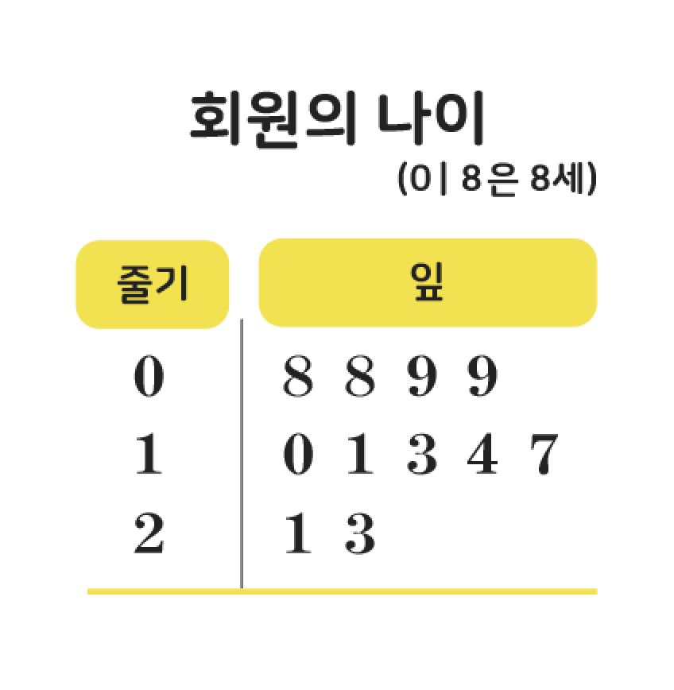
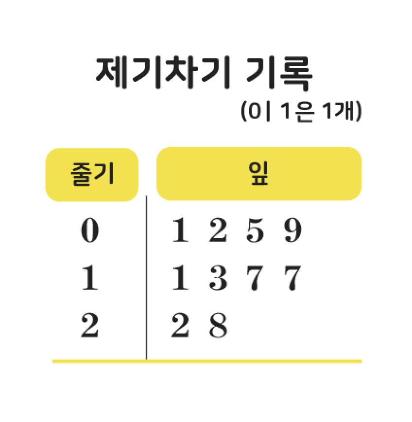
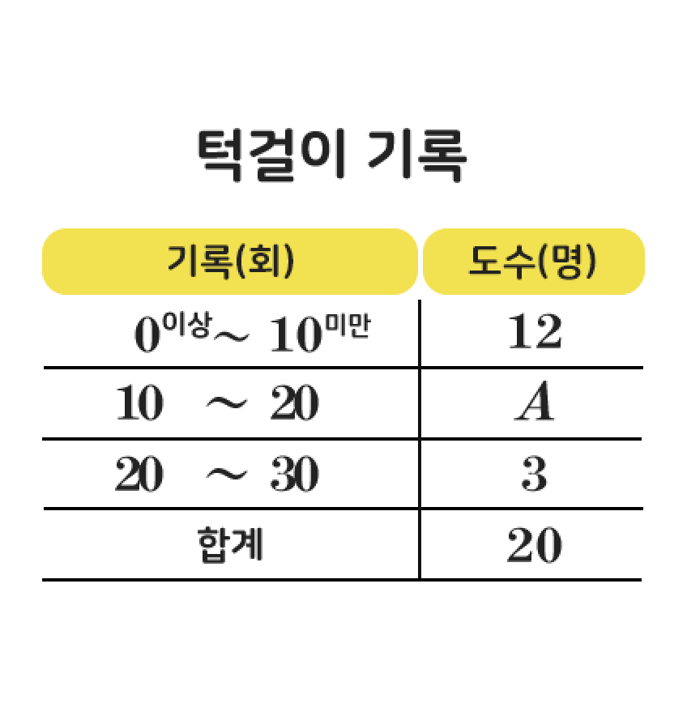
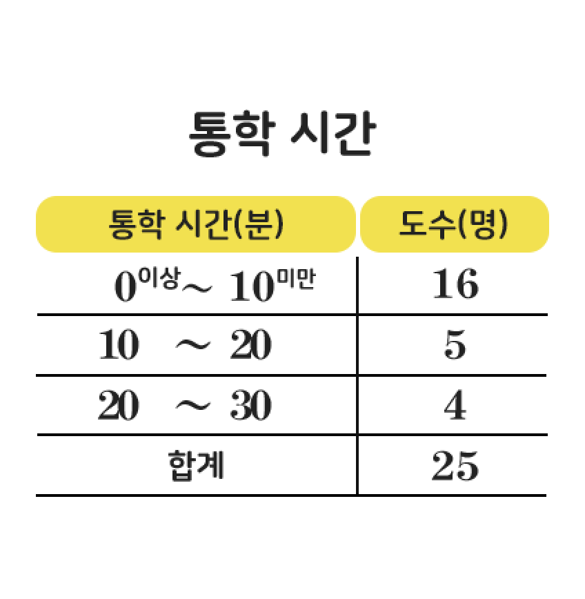
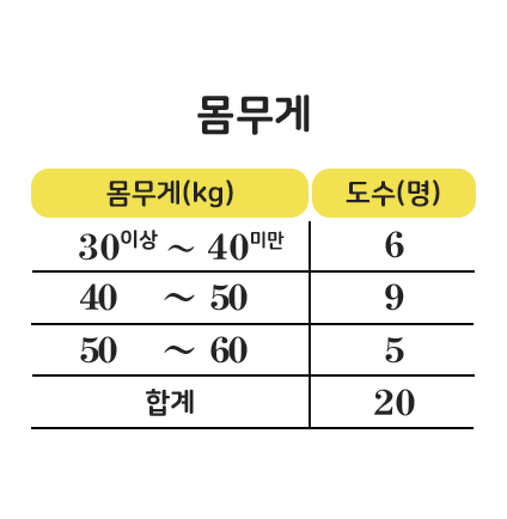

1/5
1
다음은 수영 강습반 회원의 나이를 조사하여 나타낸
줄기와 잎 그림이다. 수영 강습반 회원은 모두 몇 명인가?
줄기와 잎 그림이다. 수영 강습반 회원은 모두 몇 명인가?

오답

(수영 강습반 회원 수)=4+5+2=11(명)
정답

(수영 강습반 회원 수)=4+5+2=11(명)
2/5
2
다음은 학생 10명이 제기차기한 기록을 조사하여
나타낸 줄기와 잎 그림이다. 제기를 5번째로 많이 찬
학생의 기록은?
나타낸 줄기와 잎 그림이다. 제기를 5번째로 많이 찬
학생의 기록은?

오답
제기를 5번째로 많이 찬 학생의 기록은 13개이다.
정답
제기를 5번째로 많이 찬 학생의 기록은 13개이다.
3/5
3
다음은 학생 20명의 턱걸이 기록을 조사하여 나타낸
도수분포표이다. A의 값은?
도수분포표이다. A의 값은?

오답
12+A+3=20이므로
A=5이다.
정답
12+A+3=20이므로
A=5이다.
4/5
4
다음은 학생 25명의 통학 시간을 조사하여 나타낸
도수분포표이다. 통학 시간이 10번째로 긴 학생이
속하는 계급은?
도수분포표이다. 통학 시간이 10번째로 긴 학생이
속하는 계급은?

오답
도수가 가장 큰 계급은 도수가 16명인 0분 이상
10분
미만이다.
정답
도수가 가장 큰 계급은 도수가 16명인 0분 이상
10분
미만이다.
5/5
5
다음은 학생 20명의 몸무게를 조사하여 나타낸
도수분포표이다. 몸무게가 50kg이상인 학생은
전체의 몇 %인가?
도수분포표이다. 몸무게가 50kg이상인 학생은
전체의 몇 %인가?

오답
주어진 자료에서
1, 2의 도수가
2로 같으므로 두 값 중에서
하나가
최빈값이다.
x=1일 때, 최빈값은 1이고, 변량을 작은
값부터 크기순으로
나열하면 1, 1, 1, 2, 2, 3, 5이므로
중앙값은 2이다.
x=2일 때,
최빈값은 2이고, 변량을 작은
값부터 크기순으로 나열하면 1, 1, 2, 2, 2, 3, 5이므로
중앙값은 2이다. 따라서 중앙값과 최빈값이 같을 때의
x의
값은 2이다.
정답
주어진 자료에서
1, 2의 도수가
2로 같으므로 두 값 중에서
하나가
최빈값이다.
x=1일 때, 최빈값은 1이고, 변량을 작은
값부터 크기순으로
나열하면 1, 1, 1, 2, 2, 3, 5이므로
중앙값은 2이다.
x=2일 때,
최빈값은 2이고, 변량을 작은
값부터 크기순으로 나열하면 1, 1, 2, 2, 2, 3, 5이므로
중앙값은 2이다. 따라서 중앙값과 최빈값이 같을 때의
x의
값은 2이다.